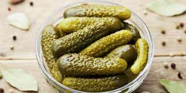
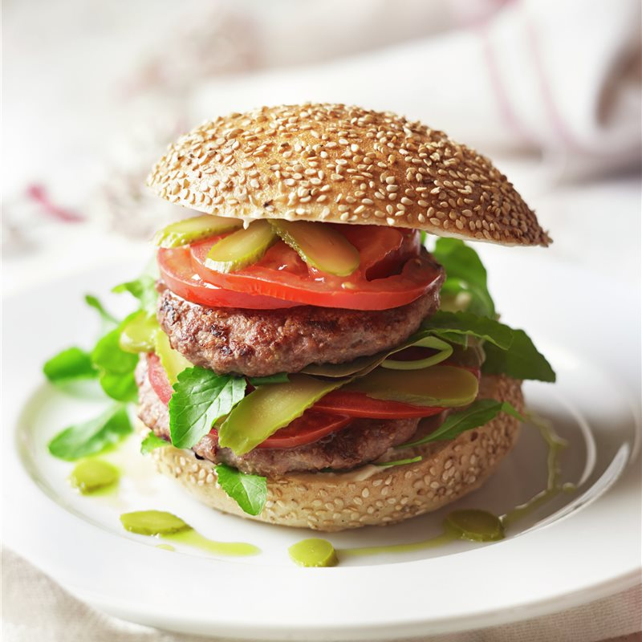

Para 1 personas:
-Atún fresco 150 g
-pepinillosg
-Cebolleta pequeña
-Cebollino 3
-Aguacate pequeño (o medio grande)
-Semillas de sésamo negro 5 g
-Salsa de soja baja en sal 5 ml
-Aceite de sésamo opcional 2 ml
-Chile seco al gusto
-Zumo de limón o lima
-Sal una pizca

Hamburguesas
1. Pan de hamburguesa
2. Carne de vacuno
3. Pepinillos pequeños en vinagre
4. Queso gouda
5. Cebolla frita
6. Ketchup
7. Mostaza
8. Mayonesa
9. Aceite de oliva
10. Zumo de limón
11. Orégano
Pasos
1. En una sartén, con un chorrito de aceite, sofreímos las carnes de hamburguesas con un chorrito de zumo de limón y orégano por cada cara. Cortamos los pepinillos en trocitos pequeños.
2. Mientras se cocina la carne, abrimos el pan de hamburguesa (el mío es artesanal) y en la tapa superior vamos añadiendo las salsas y los pepinillos y la cebolla frita.
3. Cuando la carne esté lista, la ponemos en la tapa inferior en la hamburguesa con una loncha de queso encima para que se derrita.
4. Cerramos la hamburguesa... ¡A comer!

Banderillas con cebolletas y pepinillos
Con un palillo
INGREDIENTES
1 bote de Pepinillos encurtidos
1 lata de Anchoas en conserva
1 bote de Piparras
1 bote de Aceitunas rellenas
1 bote de Pimientos rojos en conserva, en tiras
1 bote de Cebolletas pequeñas encurtidas
PREPARACIÓN
1.
Cortar en pedacidos los pepinillos.
2.
Cortar las piparras en bastoncitos de unos 3-4 cm.
3.
Cortar las tiras de pimiento en pedacitos de 2-3 cm.
4.
Insertar en platos de pincho o de pequeña brocheta los ingredientes en el siguiente orden: pepinillos, anchoas, piparra, aceitunes, pimiento y cebolletitas.
5.
Para una presentación más vistosas puedes insertar las banderillas en un pimiento alargado, tal y como vemos en la imagen.